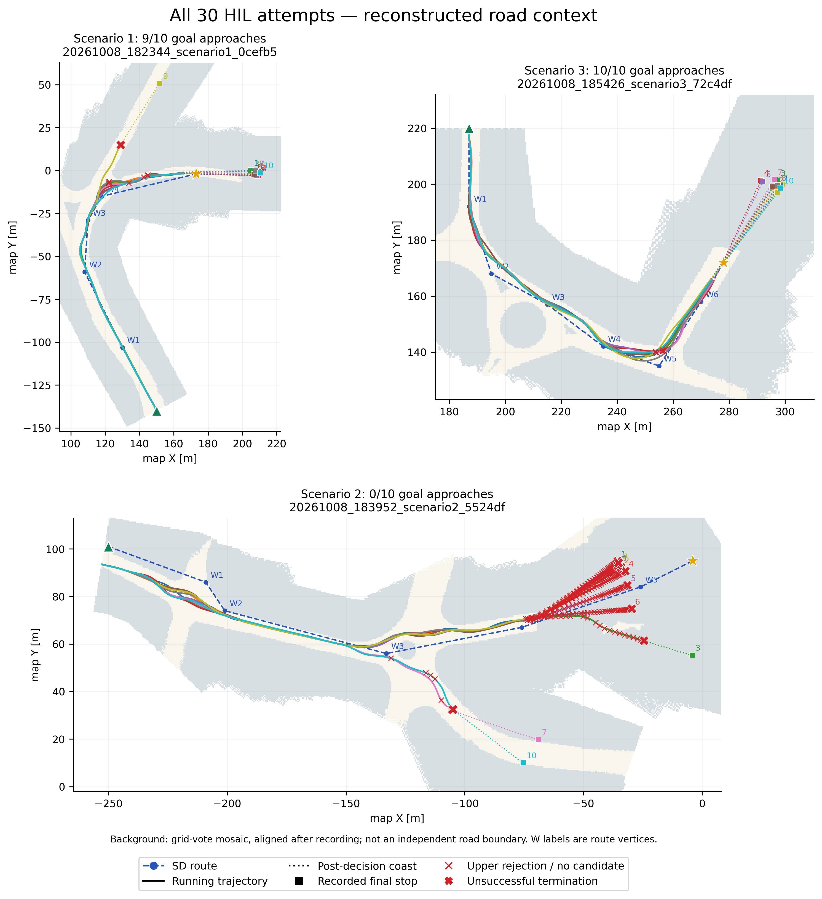

2026-10-09 · 기존 기록 분석 · 운영 코드/설정/주행 변경 없음
그림·설정·결과 통합 PDF · 상세 보고서 · HIL 구성·실제 설정 · 편향·미확보 자료
| 시나리오 | 목표 접근 | 경로 이탈 | 정체 | 상위 실패 |
|---|---|---|---|---|
| 1 | 9/10 | 1 | 0 | 7/787 |
| 2 | 0/10 | 3 | 7 | 461/1245 |
| 3 | 10/10 | 0 | 0 | 6/660 |
completed는 목표 접근이며 정차 성공이 아닙니다. S2에는 상위 500ms 주기를 넘은 760.8ms 사례가 1회 있습니다. 하위 전체 callback 시간, 실물 조향각, 차량 외곽 충돌, HIL 편향 결과는 미확보입니다.

배경은 기록 격자를 합성한 그림이며 독립적인 도로 경계 자료가 아닙니다.
시나리오1: 10페이지 · 시나리오2: 10페이지 · 시나리오3: 10페이지
실험 화면/하드웨어 사진은 미확보이며 기능도와 재구성 그림으로 대체해 촬영 자료처럼 표시하지 않았습니다.